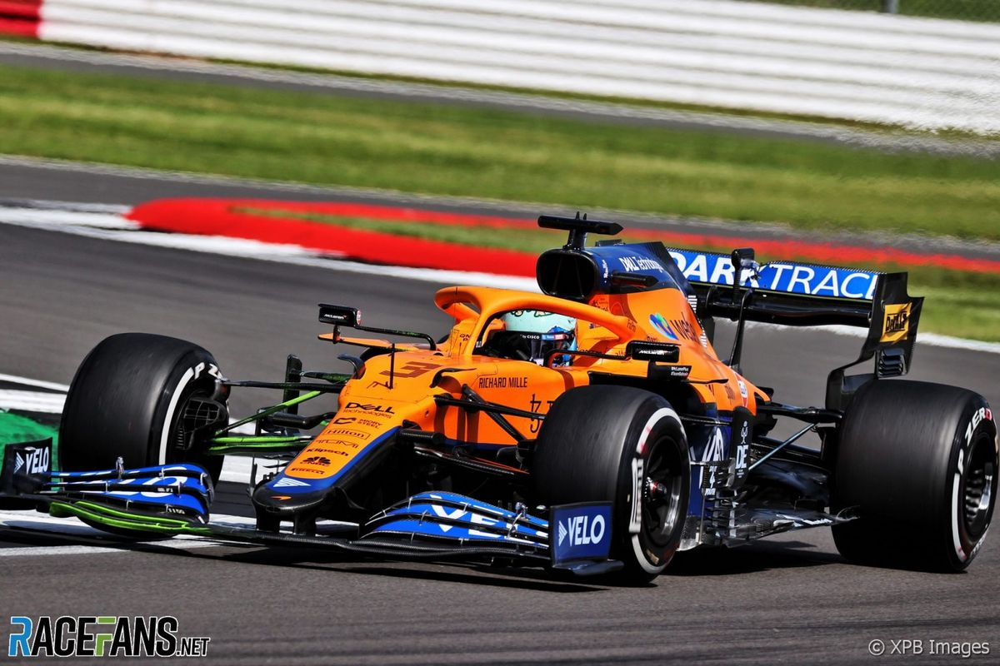

Lando Norris
DRIVER PRESENTATION
Lando Norris
Precosidad Técnica y Potencial de Lando Norris como Generación Emergente de Fórmula 1
Lando Norris inició su formación en el prestigioso karting británico (1999), demostrando aptitudes excepcionales que lo diferenciaron entre sus contemporáneos. Su paso rápido a través de F4, F3 y F2 evidenció un dominio técnico y mental precoz, obteniendo el campeonato de F3 y consolidándose como prospecto de élite para categorías superiores. Su debut en Fórmula 1 con McLaren-Renault (2019) a los 19 years posicionó a Norris como joven piloto de potencial excepcional, mostrando velocidad pura y adaptación acelerada a la complejidad de la F1. Durante el ciclo 2021, Norris acumuló experiencia estratégica y técnica consistente, participando activamente en el desarrollo competitivo de McLaren durante su fase de recuperación. Su capacidad de precisión en clasificación, gestión de neumáticos y conocimiento técnico del monoplaza lo proyectan como posible futuro campeón mundial durante la próxima década de la categoría.
MOMENTOS DESTACADOS

Primer Podio en F1
Austria 2020: En una última vuelta frenética, Norris logra su primer podio y se convierte en uno de los más jóvenes en lograrlo.

Pole Position en Rusia
2021: Norris asombra con una pole impecable bajo condiciones cambiantes, confirmando su estatus de estrella.
Doblete en Monza 2021
Lando asegura la segunda posición para completar un 1-2 histórico de McLaren, su mejor resultado hasta la fecha.